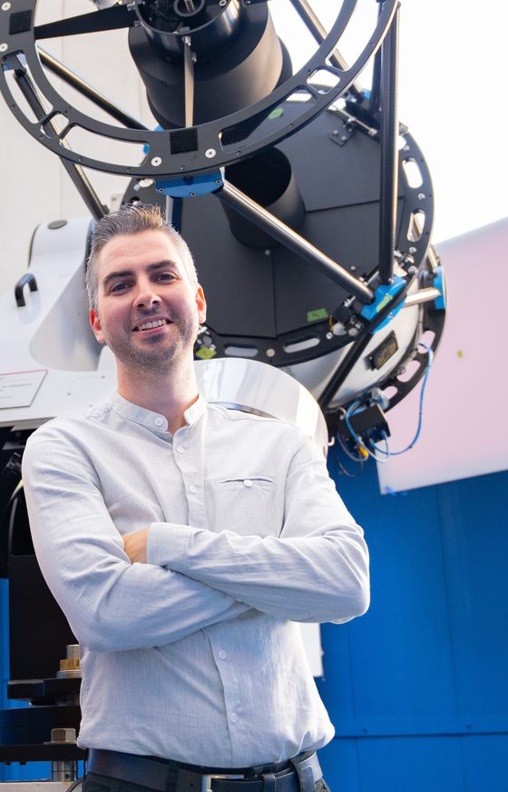

About me

I am an astrophysicist and Associate Professor in the Department of Astronomy & Physics at Saint Mary's University, in Halifax, Nova Scotia (Canada). I study star clusters, stellar dynamics, and black holes using observations from telescopes and computer simulations.
I am also the Director of the Burke-Gaffney Observatory and passionate about science communication and outreach.
I was previously a Plaskett Fellow at NRC Herzberg Astronomy & Astrophysics in Victoria (BC), an Excellence Initiative fellow at Radboud University Nijmegen (NL) and a research fellow in astrophysics at the University of Surrey, near London (UK), where I also held a postdoctoral fellowship grant from the FRQNT (Fonds de Recherche du Québec - Nature et Technologies). I completed my PhD in 2013 at the Institute for Astronomy, University of Edinburgh (UK), where I worked on the VLT-FLAMES Tarantula Survey of massive stars.